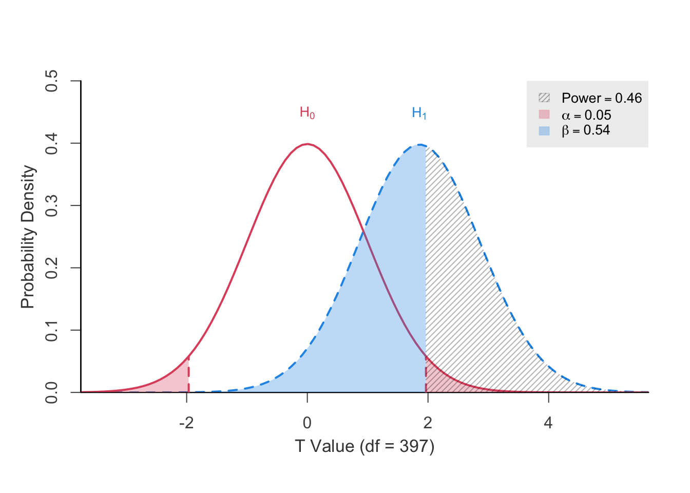
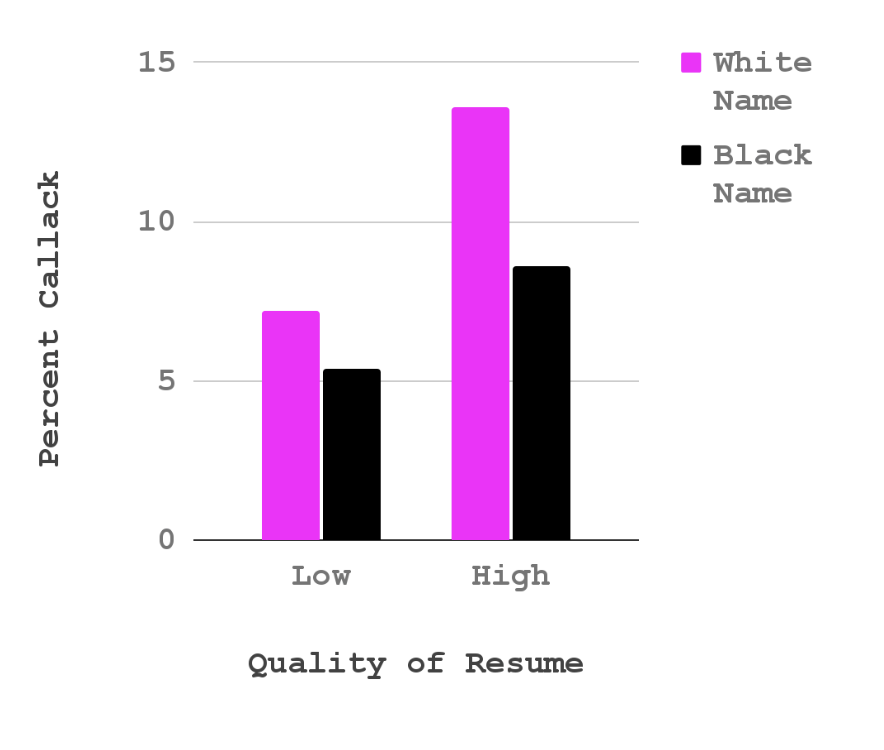
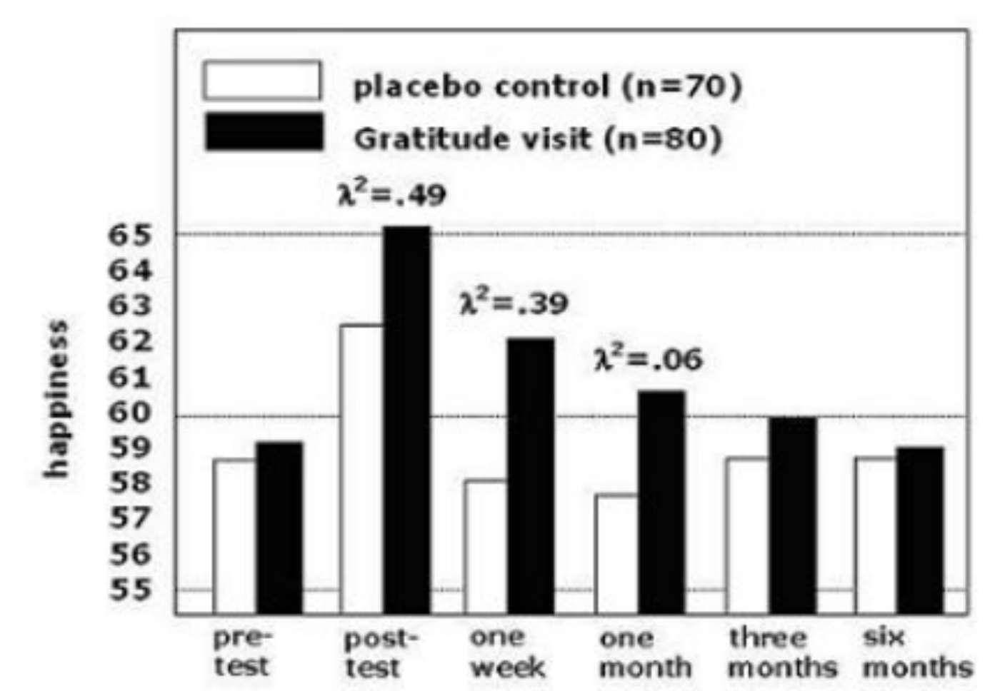
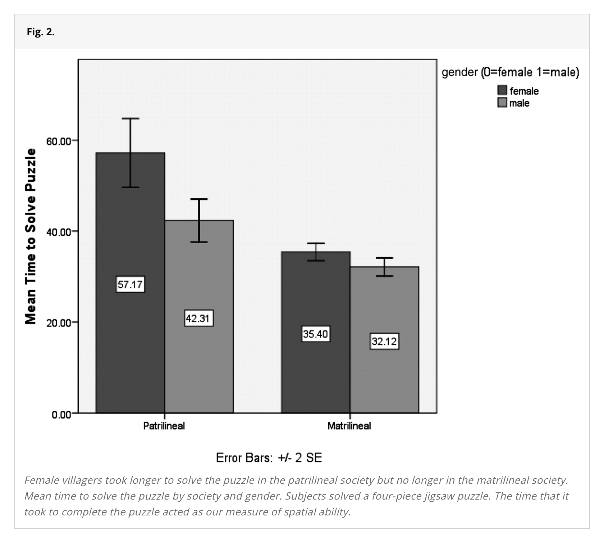
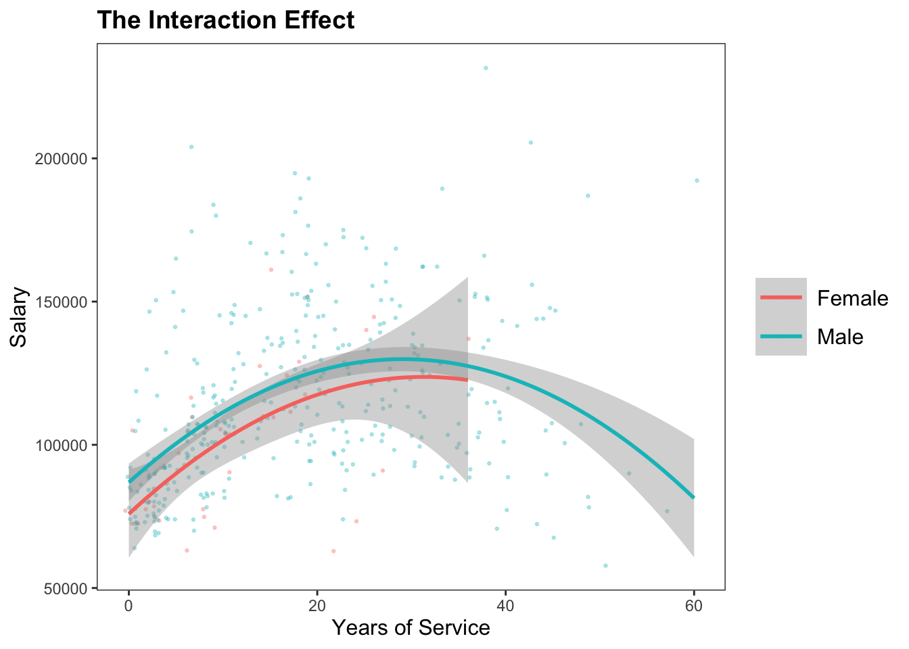
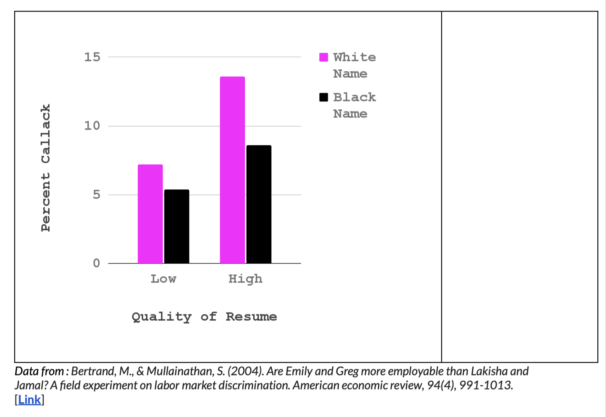

| Model 1 | Model 2 | Model 3 | |
|---|---|---|---|
| Intercept | 99974.65 *** | 101002.41 *** | 92356.95 *** |
| (2416.61) | (4809.39) | (4740.19) | |
| Years of Service | 779.57 *** | 747.61 *** | |
| (110.42) | (111.40) | ||
| Sex (0 = F; 1 = M) | 14088.01 ** | 9071.80 | |
| (5064.58) | (4861.64) | ||
| N | 397 | 397 | 397 |
| R2 | 0.11 | 0.02 | 0.12 |
| *** p < 0.001; ** p < 0.01; * p < 0.05. | |||
Check-In : Power Review
Researchers did not find a significant relationship between Sex and Salary when controlling for years of service. Estimate a) the power that they had to detect this effect, and b) the sample size that they would need for a power of 80%.
Table 1A. Predicting Salaries from Years of Service and Sex.
Table 1B. Predicting Salaries from Years of Service and Sex (Standardized / Z-Scored)
| Model 1 | Model 2 | Model 3 | |
|---|---|---|---|
| Intercept | 0.00 | 0.00 | 0.00 |
| (0.02) | (0.02) | (0.02) | |
| Years of Service | 0.33 *** | 0.32 *** | |
| (0.05) | (0.05) | ||
| Sex (0 = F; 1 = M) | 0.23 ** | 0.15 | |
| (0.08) | (0.08) | ||
| N | 397 | 397 | 397 |
| R2 | 0.11 | 0.02 | 0.12 |
| *** p < 0.001; ** p < 0.01; * p < 0.05. | |||
Salaries Dataset. “The 2008-09 nine-month academic salary for Assistant Professors, Associate Professors and Professors in a college in the U.S. The data were collected as part of the on-going effort of the college’s administration to monitor salary differences between male and female faculty members.”
- salary : the salary of the professor, in cold, hard, US American Dollars.
- yrs.service : the years of service the professor had at the college.
- sex : whether the professor was Male or Femalelibrary(car)
library(gplots)
library(jtools)
library(ggplot2)
library(arm)
mod1 <- lm(salary ~ yrs.service, data = Salaries)
mod2 <- lm(salary ~ sex, data = Salaries)
modx <- lm(yrs.service ~ sex, data = Salaries)
mod3 <- lm(salary ~ yrs.service + sex, data = Salaries)
mod4 <- lm(salary ~ yrs.service * sex, data = Salaries)
export_summs(mod1, mod2, mod3,
coefs = c("Years of Service" = "yrs.service",
"Sex (0 = F; 1 = M)" = "sexMale"))
mod1x <- arm::standardize(mod1, NULL, T)
mod2x <- arm::standardize(mod2, NULL, T)
mod3x <- arm::standardize(mod3, NULL, T)
mod4x <- arm::standardize(mod4, NULL, T)
export_summs(mod1x, mod2x, mod3x,
coefs = c("Years of Service" = "z.yrs.service",
"Sex (0 = F; 1 = M)" = "c.sex"))Part 1 : Power Recap
library(pwrss)
pwrss::power.t.test(1.86, df = 397, verbose = FALSE)
pwrss::power.t.test(1.86, df = 397, plot = FALSE)+--------------------------------------------------+
| POWER CALCULATION |
+--------------------------------------------------+
Generic T-Test
---------------------------------------------------
Hypotheses
---------------------------------------------------
H0 (Null Claim) : ncp = null.ncp
H1 (Alt. Claim) : ncp != null.ncp
---------------------------------------------------
Results
---------------------------------------------------
Type 1 Error (alpha) = 0.050
Type 2 Error (beta) = 0.542
Statistical Power = 0.458 << pwrss::power.t.student(d = .09, # cohen's d
n2 = 397, # sample size
design = "one.sample") # assuming no difference (null)+--------------------------------------------------+
| POWER CALCULATION |
+--------------------------------------------------+
Student's T-Test (One Sample)
---------------------------------------------------
Hypotheses
---------------------------------------------------
H0 (Null Claim) : d - null.d = 0
H1 (Alt. Claim) : d - null.d != 0
---------------------------------------------------
Results
---------------------------------------------------
Sample Size = 397
Type 1 Error (alpha) = 0.050
Type 2 Error (beta) = 0.568
Statistical Power = 0.432 <<pwrss::power.f.reg(r.squared.change = .01, # change from model 3 and model 1
n = 397, # sample size
k.total = 3) # number of predictors+--------------------------------------------------+
| POWER CALCULATION |
+--------------------------------------------------+
Linear Regression (F-Test)
---------------------------------------------------
Hypotheses
---------------------------------------------------
H0 (Null Claim) : R-squared = 0
H1 (Alt. Claim) : R-squared > 0
---------------------------------------------------
Results
---------------------------------------------------
Sample Size = 397
Type 1 Error (alpha) = 0.050
Type 2 Error (beta) = 0.644
Statistical Power = 0.356 <<pwrss::power.t.student(d = .09, # cohen's d
power = .80, # power
design = "one.sample") # assuming no difference (null)+--------------------------------------------------+
| SAMPLE SIZE CALCULATION |
+--------------------------------------------------+
Student's T-Test (One Sample)
---------------------------------------------------
Hypotheses
---------------------------------------------------
H0 (Null Claim) : d - null.d = 0
H1 (Alt. Claim) : d - null.d != 0
---------------------------------------------------
Results
---------------------------------------------------
Sample Size = 971 <<
Type 1 Error (alpha) = 0.050
Type 2 Error (beta) = 0.200
Statistical Power = 0.8pwrss::power.f.reg(.01, power = .80, k.total = 3)+--------------------------------------------------+
| SAMPLE SIZE CALCULATION |
+--------------------------------------------------+
Linear Regression (F-Test)
---------------------------------------------------
Hypotheses
---------------------------------------------------
H0 (Null Claim) : R-squared = 0
H1 (Alt. Claim) : R-squared > 0
---------------------------------------------------
Results
---------------------------------------------------
Sample Size = 1084 <<
Type 1 Error (alpha) = 0.050
Type 2 Error (beta) = 0.200
Statistical Power = 0.8Part 2 : Experiment Recap see slides from last week
How could we test whether gender differences were CAUSING differences in salary? Principles of Experimentation :
Outcome (DV). what the researchers want to predict or explain
Manipulation (IV). change only one thing about the variable
confound variables (“noise”). other factors that might influence the outcome variable
random assignment. if people put in random groups, then all other confound variables are random error.
Part 3 : Introduction to Interaction Effects
Some Examples



DISCUSS : Interaction Effects
From the Vision Board
- Find someone who you haven’t talked to :) or have talked to :)
- Consider an “effect” that you found before.
- What is the pattern in the data?
- What’s another variable that might influence this pattern result?
- What might the interaction effect (or lack of one) look like?
IN R : An Interaction Effect
| Model 1 | Model 2 | Model 3 | Model 4 | |
|---|---|---|---|---|
| Years of Service | 3011.28 *** | 2984.38 *** | 3058.46 * | |
| (328.53) | (327.46) | (1469.57) | ||
| Years ^ 2 | -51.13 *** | -51.27 *** | -48.89 | |
| (7.14) | (7.11) | (47.61) | ||
| Sex (0 = F; 1 = M) | 14088.01 ** | 9392.25 * | 11000.73 | |
| (5064.58) | (4574.88) | (9923.15) | ||
| Service * Sex (if Male) | -99.89 | |||
| (1509.41) | ||||
| Service^2 * Sex | -1.95 | |||
| (48.18) | ||||
| N | 397 | 397 | 397 | 397 |
| R2 | 0.21 | 0.02 | 0.22 | 0.22 |
| *** p < 0.001; ** p < 0.01; * p < 0.05. | ||||

| Model 1 | Model 2 | Model 3 | Model 4 | |
|---|---|---|---|---|
| Years of Service | 0.52 *** | 0.51 *** | 0.51 *** | |
| (0.05) | (0.05) | (0.05) | ||
| Service^2 | -0.57 *** | -0.57 *** | -0.57 *** | |
| (0.08) | (0.08) | (0.09) | ||
| Sex (0=F; 1=M) | 0.23 ** | 0.16 * | 0.14 | |
| (0.08) | (0.08) | (0.11) | ||
| Service * Sex | -0.07 | |||
| (0.25) | ||||
| Service^2 * Sex | -0.02 | |||
| (0.54) | ||||
| N | 397 | 397 | 397 | 397 |
| R2 | 0.21 | 0.02 | 0.22 | 0.22 |
| *** p < 0.001; ** p < 0.01; * p < 0.05. | ||||
### the interaction effect
mod4 <- lm(salary ~ (yrs.service + I(yrs.service^2)) * sex, data = Salaries)
### standardizing models
mod1x <- arm::standardize(mod1, NULL, T)
mod2x <- arm::standardize(mod2, NULL, T)
mod3x <- arm::standardize(mod3, NULL, T)
mod4x <- arm::standardize(mod4, NULL, T)
export_summs(mod1x, mod2x, mod3x, mod4x,
coefs = c("Years of Service" = "z.yrs.service",
"Service^2" = "I(z.yrs.service^2)",
"Sex (0=F; 1=M)" = "c.sex",
"Service * Sex" = "z.yrs.service:c.sex",
"Service^2 * Sex" = "I(z.yrs.service^2):c.sex"))
### the graph
library(ggplot2)
library(ggthemes)
library(jtools)
ggplot(data = Salaries, aes(x = yrs.service, y = salary, color = sex)) +
geom_point(size = .5, alpha = .3, position = "jitter") +
labs(title = "The Interaction Effect", x = "Years of Service", y = "Salary", color = "Sex") +
geom_smooth(method = lm, formula = y ~ poly(x, 2)) + theme_apa()More Interaction Effect Practice (as needed)
SEE PROFESSOR HANDOUT.
